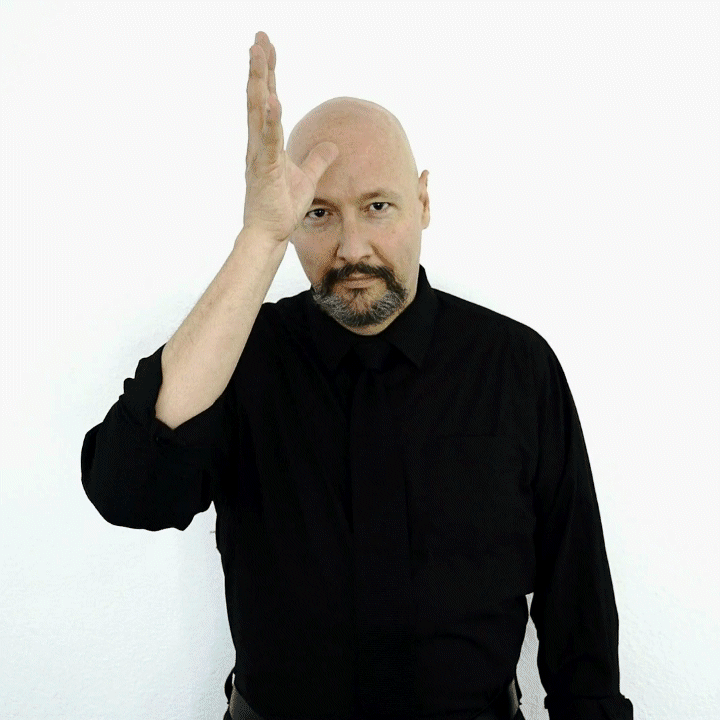
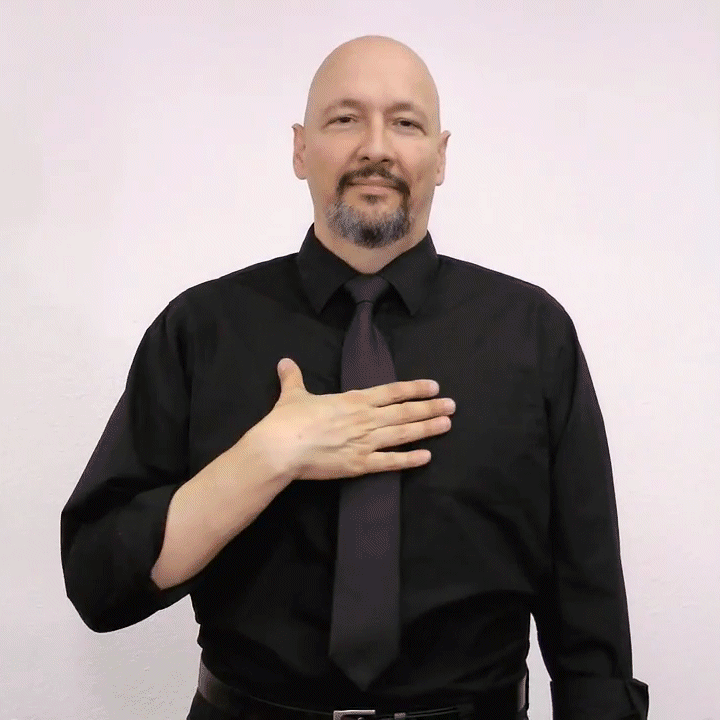

# Language is Incredible ### Dr. Will Styler - 2022 UCSD Legacy Lecture <http://savethevowels.org/legacy> --- ### Thanks to the UCSD Scholars' Society for hosting this talk - To Seth McLaughlin for coordinating the process with me - To my colleagues and students for supporting me and providing feedback - To UCSD's LingUA for helping get out the vote and classing the place up --- ### Thanks to all the students who voted to bring me here - This is the highest honor I could receive as a teacher - It means the world to me that you chose me to give this talk --- ### The Prompt > "If this were the last lecture you ever gave, what would you want to share with the world?" --- ### Using language is the most incredible and complex thing you will ever do - ... and yet you do it every day, all day --- ### People don't generally see this - We use language *so often* that it feels 'boring', 'normal' and 'easy' - We stop seeing the complexity - We stop seeing how truly bizarre it is - We stop understanding why people spend lifetimes studying it --- ### So, rather than trying to tell you why language is incredible... - I'm going to show you, by showing you that your language is very, very weird - That there is more complexity than most people *ever* notice - ... and yet it still works so well that it feels 'boring' - **That** is incredible --- ## One quick note! --- ### The World has staggering Linguistic diversity - More than 7000 languages spoken on Earth - More than than 200 languages spoken here in the US - More than 50 languages spoken in California - **Every one of these languages is as complex, fascinating, and incredible as English is!** --- ### We're doing this talk in English - It's the most commonly spoken language on our campus - It's got plenty of fun chaos to make language seem weird! - ... but English isn't the only language which is incredible! - Be thinking about how all these ideas apply in your own languages and dialects! --- ### Our plan - Speech is incredible - Grammar is incredible - Meaning is incredible - All Language is Incredible - Language is incredible --- ## Speech is Incredible --- ### Your writing system is lying to you - Cheesy Legacy Lecture Example - We fought through, though rough boughs coughed. - Knight - This thistle - Unionized --- # üêü Ghoti üêü - 'gh' from 'tough' - 'o' from 'women' - 'ti' from 'fiction' - ... and the most vile lie you've been told... --- ### AEIOU and sometimes Y - Five vile deceptions - (Sometimes six) - They hide from you the true diversity of English vowels - Beet, bit, bet, bat, bird, but, bought, board, book, boot, boy, buy, bay, boat - ... and even more, depending how you count! - Other languages have even more vowels than we do! --- ### So, let's put the writing system aside! - <img class="r-stretch" src="phonmedia/aeiou.png"> --- ## "Linguistics is the best major ever!" --- ### Your writing system hides that speech is amazingly complicated - Individual sounds blend together - Adjacent sounds affect each other - Car Keys - You don't generally run out of air when talking --- ### Your ability to understand speech is even more incredible --- ### Let's listen to some sounds <audio controls> <source src="phonmedia/lingmajor_f3.mp3" type="audio/mp3"> </audio> <audio controls> <source src="phonmedia/lingmajor_f2.mp3" type="audio/mp3"> </audio> <audio controls> <source src="phonmedia/lingmajor_f1.mp3" type="audio/mp3"> </audio> --- ### Let's listen to some sounds <audio controls> <source src="phonmedia/lingmajor_f3.mp3" type="audio/mp3"> </audio> <audio controls> <source src="phonmedia/lingmajor_f2.mp3" type="audio/mp3"> </audio> <audio controls> <source src="phonmedia/lingmajor_f1.mp3" type="audio/mp3"> </audio> <br> ### Now let's play all three at once! <audio controls> <source src="phonmedia/lingmajor_sine.mp3" type="audio/mp3"> </audio> --- ### Let's listen to some sounds <audio controls> <source src="phonmedia/lingmajor_f3.mp3" type="audio/mp3"> </audio> <audio controls> <source src="phonmedia/lingmajor_f2.mp3" type="audio/mp3"> </audio> <audio controls> <source src="phonmedia/lingmajor_f1.mp3" type="audio/mp3"> </audio> <br> ### Now let's play all three at once! <audio controls> <source src="phonmedia/lingmajor_sine.mp3" type="audio/mp3"> </audio> <br> ### Does this help? <audio controls> <source src="phonmedia/lingmajor_orig.mp3" type="audio/mp3"> </audio> --- ### Your mind is able to turn incredible distortion into 'speech' - 'Sine Wave Speech' has three sine waves, changing frequency to match the loudest components of speech - Our brain is able to hear speech even here - Incredible! --- ### Wow, we're great at using sound for speech perception! - Let's see that again --- ### Video 1 <video controls src="video/willgurk.mp4"></video> --- ### Video 2 <video controls src="video/willgurk.mp4"></video> --- ### They're the same video! - # üòá --- ### Speech perception isn't only about sound - This is the McGurk Effect - When you see 'ga ga ga' and hear 'ba ba ba', your mind tries to find the best answer! - This shows that speech perception is 'multimodal', and doesn't just rely on the acoustic signal --- ### Every human you've ever met sounds different - Different language background and dialects - Different vocal tract length - Different tongues making different shapes with a different voice - Two different people may produce 'dead' and 'did' with *nearly identical acoustics*, and yet you'll hear them as two distinct vowels - **You have never once given a damn!** --- ### Speech is incredible - It's nothing like our writing system makes us think it is - It's fluid, continuous, and complex - We are able to perceive speech despite incredible distortion - We use information above and beyond the acoustic signal - ### The fact that we can create and understand speech ever, at all, is incredible --- ### We understand speech using mechanisms which we use constantly yet don't *quite* understand - Speaking of which... --- ## Grammar is incredible --- ### What do we mean by grammar? - Linguists have a different definition of grammar than most --- ### 'Grammar' to most people - They're is a nice park over their. - 'That's the wrong form of 'there'!!! - Jessica's a great person to travel with. - 'You can't end a sentence with a preposition!!!'' - There ain't much good about our writing system in English irregardless of how you look at it. - 'Ain't isn't a real word, and OMG IRREGARDLESS IS BAD!!!' - **These are what we call 'prescriptive grammar' rules** --- ### Prescriptive Grammar rules are social rules - These 'Incorrect' sentences are still understandable - People make these 'mistakes' all the time - Some come from older versions of the language or blind adherence to the writing system - Some are arbitrary decisions by those in power as to what is 'correct' - Try asking 'How do you know that's the correct form?' - **Linguists don't worry much about this kind of grammar!** --- ### Linguists care about 'descriptive' grammar - What rules do speakers of this dialect *tend to follow* when speaking? - What makes language use *hard to understand* or *ambiguous*? - How can we describe the *patterns that people tend to follow when using language*? - How do speakers of different dialects *vary* in terms of the rules they follow? - **These rules describe how people *actually communicate*, and what makes communication *break down*** --- ### Speakers have unconscious intuitions about what's 'grammatical' and not - Is what you're hearing or reading English? - Do you understand what it's saying? - Can those words 'go together' like that? - Does this usage feel 'illegal' or 'not right' somehow? - **Let's try it!** --- ### Sample Sentences - I'm honored to present to you today. - Jessica succulent porch obsession on growing the has an. - Somebody stole my lamp, I'm delighted. - All your base are belong to us. - Saw the car red - This would be perfectly fine in Spanish! --- ### We don't always 'know the rules' of our grammar - ... but we follow them, even when they're strange --- ### English past tense forms are weird! - sing -> sang - ring -> rang - bring -> brought - sting -> stung - ding -> dinged --- ### English plurals are weird too! - Cats, Mutts, and laughs (ends with /s/) - Dogs, Professors, and Nerds (ends with /z/) - Dishes, washes, and plusses (ends with /ɪz/) - **How do we know which form works with which words?** --- ### This is a Wug <img class="r-stretch" src="img/wug.png"> --- ### Now there is another one. There are two of them. <img class="r-stretch" src="img/wug.png"><img class="r-stretch" src="img/wug.png"> --- ### There are two... <img class="r-stretch" src="img/wug.png"><img class="r-stretch" src="img/wug.png"> --- ### The Wug Test - Developed by Jean Berko Gleason in 1958 - Designed to show that young children (and adults!) have intuitions about grammatical rules - ... and those intuitions can apply to words they've never heard before! - **Let's see what else you know about creating words in English!** --- ### Are these words 'OK' or 'well formed' English words? - Quieter - Weobleing - slowest - Ari won the 2021 track meet, but Juan had a faster time when he won in 2022. - **I guess Juan was fastester.** --- ### Let's try again - Lecture - Breaking - Shockingly - I was given this honor by teaching. - **This is the teachingliest honor I've ever been given.** --- ### We can understand a word without it feeling 'right' - 'fasterer' is better than 'unblueringlyer' - ... but it's much worse than 'unlockable' - So, 'grammatical' isn't just 'yes' or 'no' --- ### We have similar intuitions about sentences - Will and Jessica went out for Krispy Kreme. - Please to be no eatings I are not tasty or nutritious. - I talked to more people than I recognized them. - I saw the cute black three cats. --- ### Let's build another sentence gradually and see how it goes --- ### The --- ### The boat --- ### The boat floated --- ### The boat floated down --- ### The boat floated down the --- ### The boat floated down the river --- ### The boat floated down the river sank. --- ### This is a 'Garden path' sentence - Your brain commits to one potential 'reading' of the sentence - Then, when you get that last word, your brain crashes - You have back up and analyze it differently to be able to understand it - The right pitch, timing, and intonation can make it feel OK - "The boat, floated down the river, sank!" --- ### How we say the sentences matters in other places! - Run to the store and grab... - Cheese - M&Ms - Tea - Some avocados - Pine nuts --- ### Let's try one more set of sentences! - Lightning round! --- ### More than cats attacked the new sofa than dogs. --- ### Most people call their friends more than I do. --- ### Pedro more went the car parking lot to in the. --- ### More of my plants are succulents than not. --- ### More people have been to Mexico than I have. --- ### Chantel saw more squirrels than Charlie and Mei. --- ### Jessica has more been to Tijuana than students. --- ### More UCSD students post raccoon memes than I do. --- ### Will makes more puns than most professors. --- ### Wait a second... - "More people have been to Mexico than I have" - "More UCSD students post raccoon memes than I do." - **These make zero sense!** - These are called 'Comparative Illusions', and come from blending two common expressions - "More people have been to Mexico than Bhutan" and "She's been there more than I have" - These *feel* grammatical at first - ... but we crash when we try to evaluate the meaning! --- ### Grammar is incredible - It's so much more than silly 'grammar rules' from pedants - We have strong knowledge of what forms should be used when - We understand that although we have lots of options, we can't always use all of them - Some of our judgments about language forms are strong and 'black and white' - ... but lots of forms can fall into 'gray areas' - ### We have strong and gradient instincts about how language works, even when we're not aware of it --- ### Yet, when meaning gets weird, those can break down - Which brings us to our next topic... --- ## Meaning is incredible --- ### You understand what words mean, right? - # "Truck" --- ### Let's ask a very common question in 2022 - # Are you a robot? --- ### Click on all slides containing a Truck --- <img class="r-stretch" src="img/truck_base.jpg"> --- <img class="r-stretch" src="img/truck_penguin.jpg"> --- <img class="r-stretch" src="img/truck_semi.jpg"> --- --- <img class="r-stretch" src="img/truck_schoolbus.jpg"> --- <img class="r-stretch" src="img/truck_suv.jpg"> --- <img class="r-stretch" src="img/truck_hamster.jpg"> --- <img class="r-stretch" src="img/truck_realtoy.jpg"> --- <img class="r-stretch" src="img/truck_skateboard.jpg"> --- <img class="r-stretch" src="img/truck_firetruck.jpg"> --- <img class="r-stretch" src="img/truck_elcamino.jpg"> --- ### Words have a 'core meaning' - We call this a 'semantic prototype' - Yet, many things which aren't quite that still feel like 'truck' - Word meanings are *gradient*, rather than 'all or nothing' - ... or maybe you're all just robots --- ### ... but sometimes, word meanings can shift some - Is one 'many'? - Is five 'many'? - Is twenty 'many'? - To answer this, we must answer a different question --- ### Did you hear about the bug that listens to you talk before biting you? - Yeah, they're called **linguist-ticks!** --- ### Let's say twenty people laughed at that - Did 'many people' laugh? - Did 'many people' laugh if there were 22 people in the room? - Did 'many people' laugh if there were 40 people in the room? - Did 'many people' laugh if there were 5000 people in the room? --- ### We understand the intention of every sentence - "Never enroll in Will's classes if you don't like puns" - "Gonna come visit next week?" - "Give me the enchiladas!" - "You should really declare a linguistics major." - "Up in the back row, students cringed in anticipation." --- ### Some sentence meanings are hard to understand without world knowledge - "I saw the Chancellor of UCSD's Office" - "Will brought the Chancellor up during his talk." - "I went to the store" - "Oh I saw him!" - "I feel you." --- ### How about a sentence you can understand but don't know the meaning of? --- <img class="r-stretch" src="img/meet_me_here.jpg"> --- ### We also think about *why* people say things - "Will, who is definitely not Batman, gave a lecture." - "Dalen sure has been hanging out with Helen a lot lately." - "I ate some of your donuts" - "Your watch is gone? I wonder if Ryan's back in town." - **We understand what's implied without even thinking about it!** --- ### Meaning is incredible - Even single words' meanings can be tricky to pin down - Sentence meaning is easy to understand - Except when it isn't - Our knowledge about the world is crucial for understanding - ... and getting some meaning requires us to make assumptions about the world - ### We understand language's meaning with incredible nuance, using our knowledge of the world! --- ### I know what you're thinking... - # bruh - ... and that word is incredible, too! --- ## All Language is incredible --- ### *Everybody's* language is amazing to linguists - There's no such thing as 'good' or 'bad' language - Although social situations can dictate 'proper' language use, that's social! - Nobody speaks 'incorrectly', just differently - Speakers of different dialects don't have 'bad grammar', they just use a different grammar - **We believe that all language is valid and fundamentally worthy of study** --- ### We also care about lots of kinds of language use! --- ### Slang is incredible! - If somebody's using a word and somebody else is understanding it, it's worthy of study - You may have strong instincts about the meaning of 'yassification', 'based', 'mid', and 'simp' - It's quite simp to accidentally use words incorrectly - (Yes, that usage was cringe) - We understand slang and find it just as useful as any other language! - Swearing is amazing, and has fascinating linguistic features worthy of study --- ### Internet Language is incredible! - Emoji use is 100% linguistic (üéâ) - Internet-first linguistic forms are fascinating! (e.g. lol, smdh, dni, brb, thx) - Keysmashing (e.g. alkjhsasdklj) is language, with meaning and social implications - uwu is a vawid fowm of winguwistic expweshun Ôºº(Ôºæ‚ñΩÔºæ)Ôºè --- ### Memes are incredible (and they're language!) --- --- ### We have linguistic intuitions about memes - We understand the meaning of meme templates - We are able to move elements of memes around like affixes on words - The methods we use to describe word formation work here too! - Memes have and change meanings like any other linguistic construct --- <img class="r-stretch" src="memes/memesarelanguage.jpg"> --- ### Code Switching is incredible! - 'Code Switching' is the seamless blending of two languages within a sentence or utterance by multilingual folks - "Ma√±ana me voy al Price Center to order mis textbooks for next quarter" - Speakers are simultaneously using elements of both languages' grammars - We can find fine-grained details from *both* languages in code-switching! - We also code switch among our many dialects! - *Code switching is fascinating, and should be a matter of pride, not shame!* --- ### Speaking of different languages... --- ### Signed Languages are language! - Sign is not just 'miming' or 'spelling out another language with the hands' - If it were just miming, you could understand all the signs! --- ### Which is 'father' and which is 'mother'? <img class="small" src="img/asl_mom.gif"> - ### MOTHER - FATHER <small>ASL GIFs courtesy of Dr. Bill Vicars at <a href="http://www.lifeprint.com">http://www.lifeprint.com</a> </small> --- ### Which is 'white' and which is 'like/enjoy'? <img class="small" src="img/asl_like.gif"> - ### WHITE - LIKE --- ### Which is 'paper' and which is 'cheese'? <img class="small" src="img/asl_cheese.gif"> - ### PAPER - CHEESE --- ### Some signs are 'iconic' and related to what they represent <img class="r-stretch" src="img/asl_die.gif"> - ... but so are some words in English! <h1>'Whoosh!'</h1> --- ### Signed languages are Language! - Their grammars can differ *vastly* from nearby spoken languages - American Sign Language isn't even *related* to English - The same linguistic theories used for spoken languages are useful and used for signed language - **Signed languages are just as valid and interesting to study as spoken languages!** --- ### ... and the rest of the world's languages are amazing too! - Different sounds! - Different word structures! - Different ways to build sentences! - Different ways to talk about reality, time, space, and events! - **Every language is just as capable of describing reality as any other language, but every language does it differently!** --- ### All human languages can teach us *something* - Every language community can teach us something about how Language works - No language is 'boring' or 'basic' or 'primitive' - ... and we as linguists can collaborate with communities to help folks to document, teach, and preserve their linguistic heritage --- ### So, all language is incredible - Whether formal or informal, prestigious or unrecognized - Whether new or old, from Dickens or Discord - Whether acknowledged as language or not - Signed or Spoken - Here or anywhere else - ### Language is Language, no matter the form, and it's all worth celebrating! --- ### One last question... --- ### How is a legacy lecture like an extension cord? - It has a plug at the end! --- ### You should declare a Linguistics Major or Minor! - You'll learn how we can make sense of this madness - ... and find even more madness! - LIGN 101 is a great place to start (offered every quarter and over the summer) - More info at <https://savethevowels.org/lingmajor> - OK, OK, back to the actual point --- ### Using language is the most incredible and complex thing you will ever do - Speech is shockingly complex, and we don't care - We're barely aware of our grammar, yet we use it constantly to make fine-grained decisions - We understand nuanced meanings, informed by our understanding of the world - Everybody languages, in different, worthwhile, and valid ways, all of which can teach us about Humanity - Language is worth studying, and a life in language is a life well spent - ... because ... --- # Language is Incredible - ### ... and I hope you all can lega-see that now! --- <huge>Thank you!</huge> <http://savethevowels.org/legacy> has the slides and, eventually, a recording!